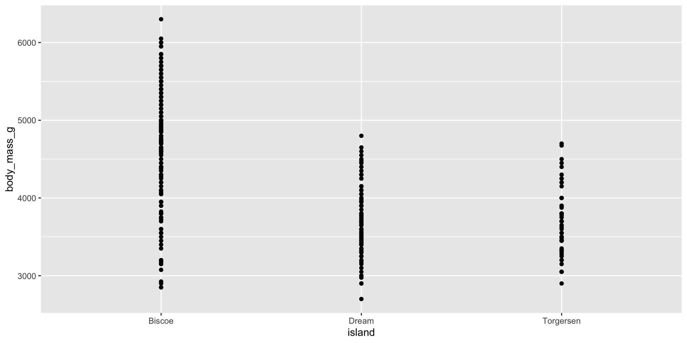

Lecture 14
Duke University
STA 199 Spring 2025
2025-03-06
Go to your ae project in RStudio.
Make sure all of your changes up to this point are committed and pushed, i.e., there’s nothing left in your Git pane.
Click Pull to get today’s application exercise file: ae-11-modeling-penguins-multi.qmd.
Wait till the you’re prompted to work on the application exercise during class before editing the file.
penguins)A different researcher wants to look at body weight of penguins based on the island they were recorded on. How are the variables involved in this analysis different?
outcome: body weight (numerical)
predictor: island (categorical)
Determine whether each of the following plot types would be an appropriate choice for visualizing the relationship between body weight and island of penguins.
Scatterplot ❌
Box plot ✅
Violin plot ✅
Density plot ✅
Bar plot ❌
Stacked bar plot ❌
Visualize the relationship between body weight and island of penguins. Also calculate the average body weight per island.
Visualize the relationship between body weight and island of penguins. Also calculate the average body weight per island.
Visualize the relationship between body weight and island of penguins. Also calculate the average body weight per island.
Visualize the relationship between body weight and island of penguins. Also calculate the average body weight per island.
Visualize the relationship between body weight and island of penguins. Also calculate the average body weight per island.
Visualize the relationship between body weight and island of penguins. Also calculate the average body weight per island.
Fit a linear regression model predicting body weight from island and display the results. Why is Biscoe not on the output?
# A tibble: 3 × 5
term estimate std.error statistic p.value
<chr> <dbl> <dbl> <dbl> <dbl>
1 (Intercept) 4716. 48.5 97.3 8.93e-250
2 islandDream -1003. 74.2 -13.5 1.42e- 33
3 islandTorgersen -1010. 100. -10.1 4.66e- 21\[ \widehat{body~mass} = 4716 - 1003 \times islandDream - 1010 \times islandTorgersen \]
Intercept: Penguins from Biscoe island are expected to weigh, on average, 4,716 grams.
Slope - islandDream: Penguins from Dream island are expected to weigh, on average, 1,003 grams less than those from Biscoe island.
Slope - islandTorgersen: Penguins from Torgersen island are expected to weigh, on average, 1,010 grams less than those from Biscoe island.
What is the predicted body weight of a penguin on Biscoe island? What are the estimated body weights of penguins on Dream and Torgersen islands? Where have we seen these values before?
Calculate the predicted body weights of penguins on Biscoe, Dream, and Torgersen islands by hand.
\[ \widehat{body~mass} = 4716 - 1003 \times islandDream - 1010 \times islandTorgersen \]
When the categorical predictor has many levels, they’re encoded to dummy variables.
The first level of the categorical variable is the baseline level. In a model with one categorical predictor, the intercept is the predicted value of the outcome for the baseline level (x = 0).
Each slope coefficient describes the difference between the predicted value of the outcome for that level of the categorical variable compared to the baseline level.